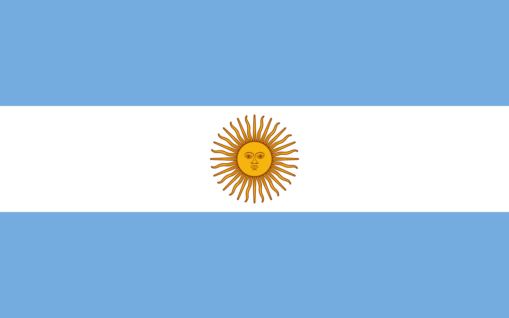
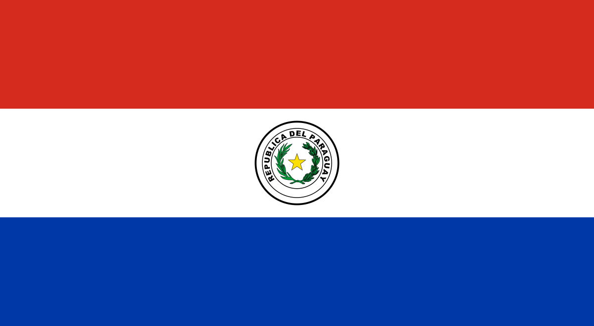
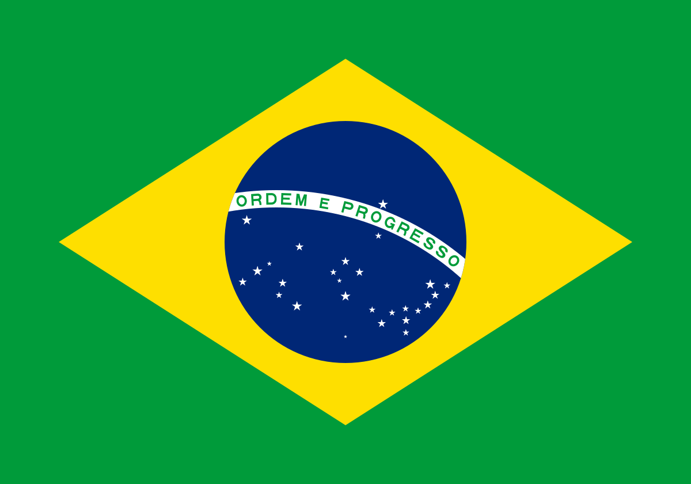

| Equipo | Pais | Titulos | Subtitulos | Campeon | Subcampeon |
|---|---|---|---|---|---|
|  | 7 | 0 | 1964, 1965, 1972, 1973, 1974, 1975, 1984 | ||
 |
6 | 4 | 1977, 1978, 2000, 2001, 2003, 2007 | 1963, 1979, 2004, 2012 | |
 |
 |
5 | 5 | 1960, 1961, 1966, 1982, 1987 | 1962, 1965, 1970, 1983, 2011 |
 |
4 | 1 | 1968, 1969, 1970, 2009 | 1971 | |
 |
 | 3 | 4 | 1979,1990,2002 | 1960,1989,1991,2013 |
|
3 | 3 | 1971,1980,1988 | 1964,1967,1969 | |
|  | 3 | 3 | 1992,1993,2005 | 1974,1994,2006 | |
 |
3 | 2 | 1986,1996,2015 | 1966,1976 |